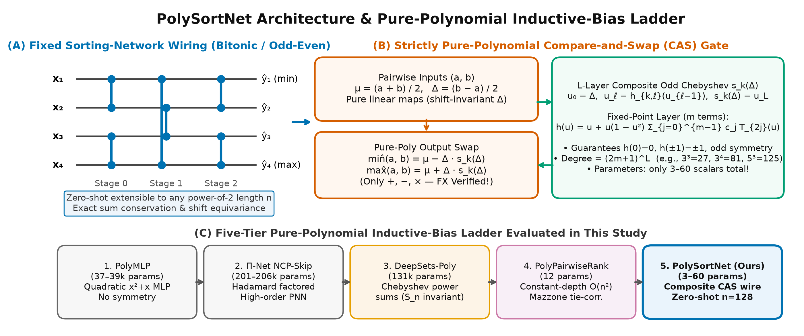
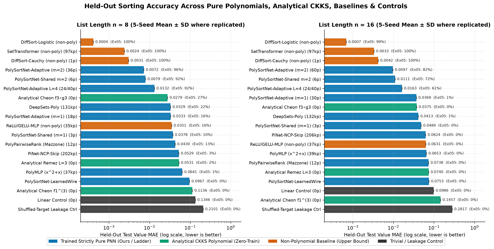
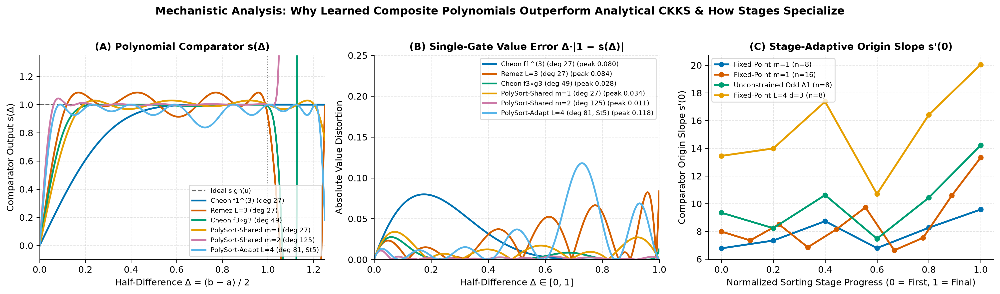
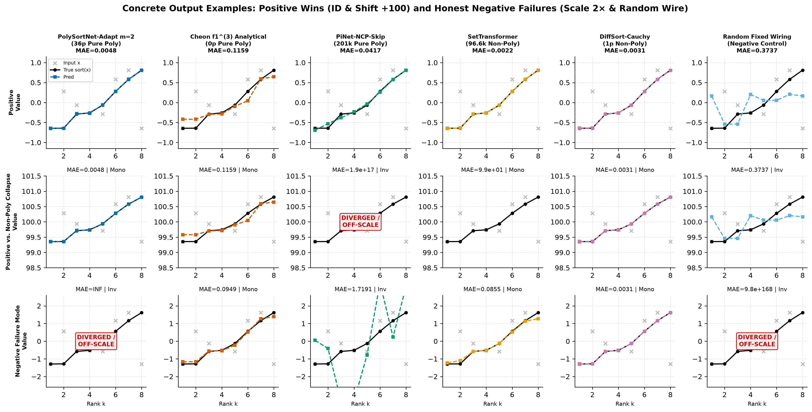
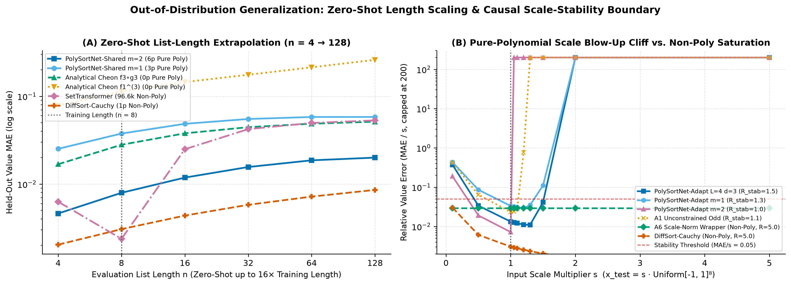
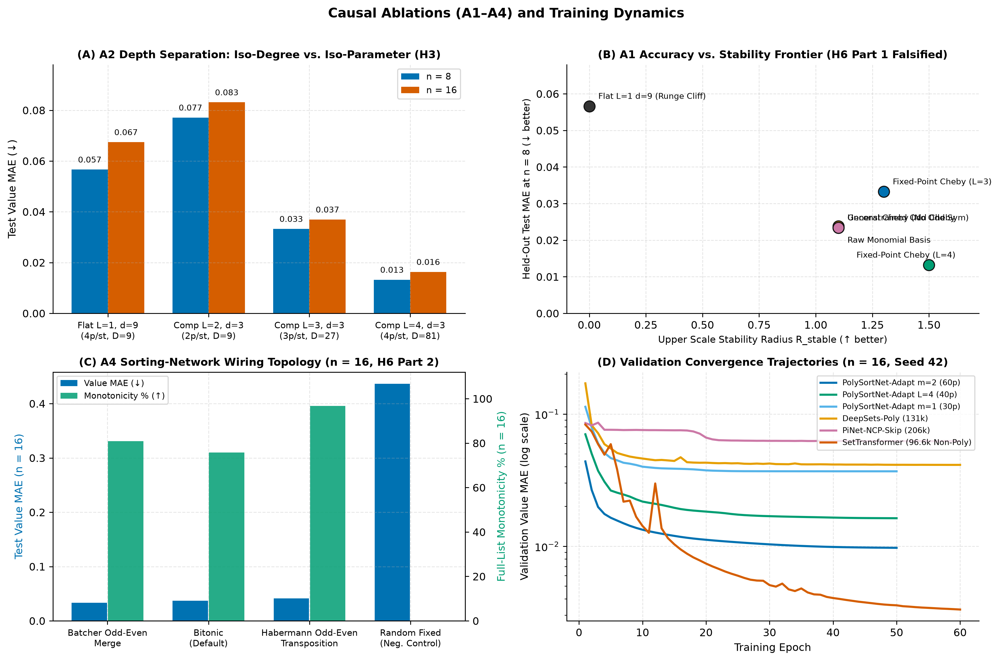

Run a Pure Polynomial Neural Network Live
if/else comparisons,
zero Math.max/min/abs/exp/tanh, and zero Array.sort() during inference (Array.sort is used only afterward to compute ground-truth error metrics).
Element-by-Element Output Comparison
| Rank k | Unsorted Input x | Ground Truth sort(x) | Pure-Poly Output ŷ | |ŷ − y| |
|---|
Stage-by-Stage Bitonic Wire Trajectories
Watch how each parallel pure-polynomial Compare-and-Swap stage routes unsorted values into ascending order without a single discrete comparison.
Active Model Comparator Curve s(Δ) & Value Error Δ|1 − s(Δ)|
Multi-Seed Core Model Benchmarks (5 Seeds × 10,000 Held-Out Lists)
| Model | Type | Params | Seeds | Test MAE (Mean ± SD) | 95% Boot CI | Mono % | Ex@0.05 % | Kendall τ | Shift +100 | Near-Ties 1e-3 | R_stable |
|---|
Holm-Bonferroni Paired Wilcoxon Hypothesis Tests (Preregistered H1–H6)
| Test ID | Comparison (A vs B) | n | Seeds | Mean A | Mean B | Diff (A−B) [95% CI] | Rank-Biserial r | p_holm | Status |
|---|
• Iso-Parameter Depth Separation (A2): At 4 params/stage, composite
L=4, d=3 (deg 81) beats flat L=1, d=9 by 4.28× on MAE and widens R_stable from 0.00 → 1.50.• Wiring Topology Indispensability (A4): Random fixed wiring collapses to
0.00% Mono (MAE 0.39–0.44); Batcher Odd-Even Merge cuts MAE 10–13% vs Bitonic; Odd-Even Transposition reaches 99.3% / 96.8% Mono.• Causal Scale Cliff Proof (A6): Adding non-poly
max(|x|) scaling lifts R_stable: 1.3 → 5.0, proving pure polynomial unboundedness causes the cliff (at the cost of breaking Shift +100 equivariance).
• H6 Part 1 FALSIFIED on ID MAE: Removing the
h(1)=1 fixed-point constraint cuts ID MAE by 26–30% via late-stage domain contraction (s_5(1) = −444..−1038), trading away scale stability (R_stable: 1.3 → 1.1).• H3 Part 1 FALSIFIED at strict iso-degree D=9: 4-param/stage flat deg-9 beats 2-param/stage composite
L=2, d=3 on ID MAE before exploding at scale 1.1×.• Pure-Poly Upper Bound Gap: Non-poly
DiffSort and SetTransformer remain sharper in-distribution, and all pure polynomials blow up outside their finite stability radius.
All 30 Stage-4D Causal Ablation Runs (A1–A6)
| Ablation Run ID | n | Purity | Params | ID MAE | Mono % | Ex@0.05 % | Kendall τ | Shift +100 | R_stable |
|---|
Figure 1: PolySortNet Architecture & Pure-PNN Ladder

Fixed Bitonic CAS wiring paired with strictly pure-polynomial composite odd Chebyshev comparators and the 5-tier pure-PNN inductive-bias ladder.
Figure 2: Held-Out Sorting Accuracy (n = 8 & n = 16)

5-seed mean ± SD Value MAE (log scale) across trained pure PNNs, zero-training analytical CKKS polynomials, non-polynomial baselines, and leakage controls.
Figure 3: Mechanistic Comparator Transfer & Stage Specialization

Why data-trained composite polynomials outperform analytical CKKS by minimizing value-weighted error Δ|1−s(Δ)| and sharpening origin slope across stages.
Figure 4: Output Examples — Positive Wins & Negative Failures

Side-by-side predictions on ID uniform lists, Shift +100 (where pure PolySortNet preserves exact equivariance while SetTransformer & PiNet fail), and Scale 2.0× blow-up.
Figure 5: Zero-Shot Length Scaling & Scale-Extrapolation Cliff

6-parameter PolySortNet-Shared-m2 extrapolates 16× zero-shot to n=128 (beating SetTransformer 2.65×), while showing the sharp polynomial cliff vs non-poly baselines.
Figure 6: Causal Ablations (A1–A4) & Convergence

Iso-degree vs iso-parameter separation, parameterization accuracy-vs-stability Pareto frontier, wiring topology causality, and validation loss trajectories.